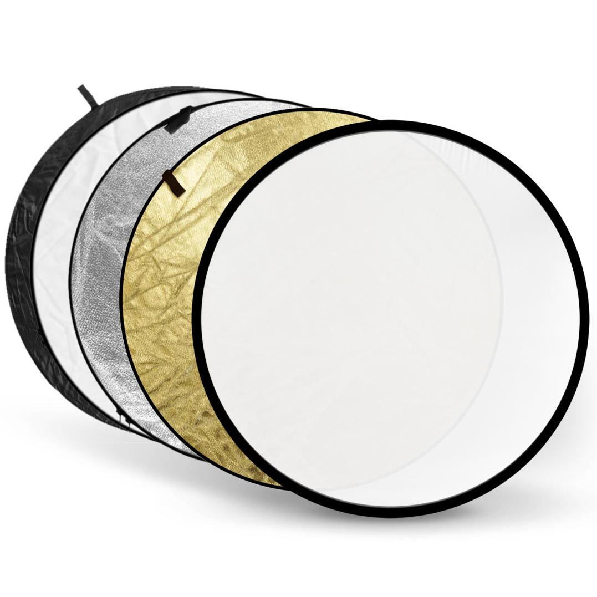

Camera
Professional Video Camera
The most essential part of filmmaking is, of course, a camera. While any camera can be used to make a movie, you do need a professional-grade camera if you wish to share your movie on the big screen. There are many options to use, and they will oftentimes be expensive to buy. Many indie filmmakers will rent a professional camera to save money. Professional video cameras will offer better film resolution, oftentimes shoot in RAW file format (which allows for better color correction in post-production), and has a well-made built-in microphone. The camera shown here is the RED Dragon, an expensive but popular choice in professional filmmaking.
DSLR Camera
For lower-budget movies and short films, some filmmakers decide to use DSLR cameras. While these cameras are mainly designed for taking still photos, many nowadays also shoot high-quality video. With the benefit of swappable lenses and a lot of control over visual settings, these cameras are a large step-up from simple point-and-shoot cameras. They are also much more affordable. For example, the Canon EOS Rebel T5i and Nikon D3300 are two of the most popular entry-level DSLRs, and they are priced $450-$600 new, and much cheaper when refurbished. The only cons to using a DSLR are that they are not specifically designed to film video. Many require an external microphone to record quality audio, and many only film up to 29 minutes and 59 seconds worth of video at a time (this is to avoid being considered a "video camera" and paying larger tariffs in the European Union).
Camera Stabilizers
Tripod
Many scenes require a steady shot that does not move in any way. This is where a tripod comes in. Tripods are a useful tool when the camera is not moving and you are focusing on a subject that is (usually) not moving. Tripods can be inexpensive, or they can be very expensive, depending on how durable you want it and with how many features. While on a tripod, the camera doesn't move, but most allow for panning (discussed on the "Filming" page).
Steadicam/Gimbal
Steadicams (left) and gimbals (right) allow a cameraman to walk around a set and
film with little noticeable effect. These items will stabilize the camera and
create smoother movements when walking. If you film a video without a steadicam
or gimbal, you can oftentimes see jagged movements with each footstep the
cameraman takes. These products eliminate this effect to varying degrees and
make movement less noticeable.
Dolly
Dollies move the camera in simple, extremely smooth movements around the set. Dollies consist of a cart with wheels that the camera attaches to and oftentimes there are a set of tracks for it to glide on. Dollies are very much like tripods on wheels, allowing for even less jagged camera movement than steadicams and gimbals. In fact, some dollies allow you to put a tripod on top of them.
Lighting
Lights and Reflectors
Lighting is an important part of filmmaking, especially when filming in a studio or indoors. Therefore, portable lighting units are used to add artificial light exactly where needed. However, it doesn't always look great if the lights are pointed directly at a subject. Sometimes a softer light is needed. This is where light reflectors come into play. The light is shined at the reflector and bounced back at the subject. This adds more light to the subject, but it is not very harsh to look at.
Sound
Boom Microphones
Many professional filmmakers use boom microphones for their audio. These microphones pick up very clear sound and are generally placed closer to the actors than the camera, which allows them to record audio at a louder volume. These microphones also allow for actors to move around when they speak without fear of their voices growing louder or quieter when picked up by the camera. With a boom microphone, actors' voices will have a constant volume that allows for easier sound editing and less reshoots.